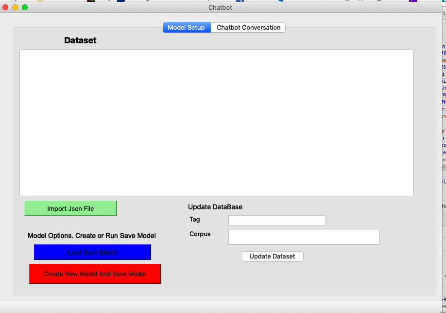
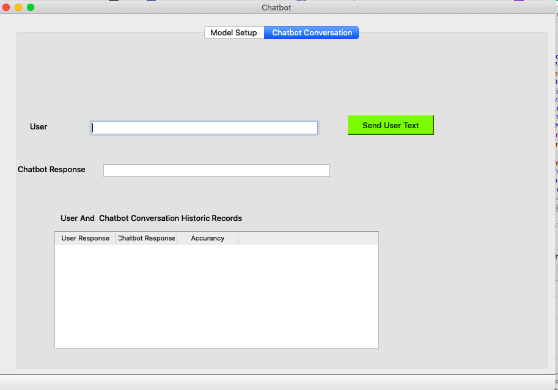
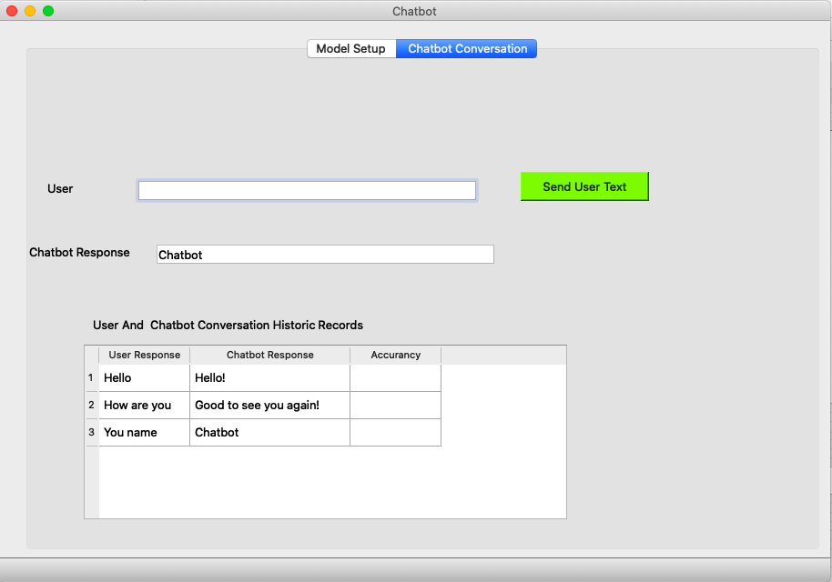

Required Python Packages
from nltk.stem import WordNetLemmatizer
lemmatizer = WordNetLemmatizer()
import pickle
import numpy as np
from keras.models import load_model
import json
import pickle
import random
from keras.models import Sequential
import from keras.layers import Dense, Activation, Dropout
from keras.optimizers import SGD
import random
from PyQt5 import QtWidgets, uic,QtCore
import sys
Chatbot
Main screen (First tab)

User and chatbot interaction screen(Second tab)

Example of user and chatbot interaction. Data table keep a history of the chats between the chatbot and user.

Objective:
Program read in a JSON file that has data formatted as classes and related value.
The data is clean: lower case, remove duplication, common words, etc.
Data is formatted into the NumPy array, which indicates the present of word by setting the value 1 in the array.
The nonexistence of word in the array is set as zero.
Using the tensor flow machine learning algorithm is run on the array data to categorized the data.
Run model two options
Option one:
Click on the "import button."
Select "Create new model and save model" button
It takes about 2 to 10 minutes, depending on the dataset size for the generation model.
Option two:
Click on "Load save model" button.
Click the second tab to start the conversation with the chatbot.